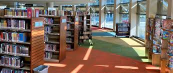

 Welcome to the Edison library rental services. Edison library was founded in 1950 in memory of the greatest American Inventors, Thomas Alva Edison.
" Thomas Alva Edison (February 11, 1847 – October 18, 1931) was an American inventor and businessman who has been described as America's greatest inventor.[1][2][3] He developed many devices in fields such as electric power generation, mass communication, sound recording, and motion pictures.[4] These inventions, which include the phonograph, the motion picture camera, and early versions of the electric light bulb, have had a widespread impact on the modern industrialized world.[5] He was one of the first inventors to apply the principles of organized science and teamwork to the process of invention, working with many researchers and employees. He established the first industrial research laboratory.[6] Edison was raised in the American Midwest; early in his career, he worked as a telegraph operator, which inspired some of his earliest inventions.[4] In 1876, he established his first laboratory facility in Menlo Park, New Jersey, where many of his early inventions were developed. He later established a botanical laboratory in Fort Myers, Florida, in collaboration with businessmen Henry Ford and Harvey S. Firestone, and a laboratory in West Orange, New Jersey, that featured the world's first film studio, the Black Maria. He was a prolific inventor, holding 1,093 US patents in his name,[7] as well as patents in other countries. Edison married twice and fathered six children. He died in 1931 of complications of diabetes." more